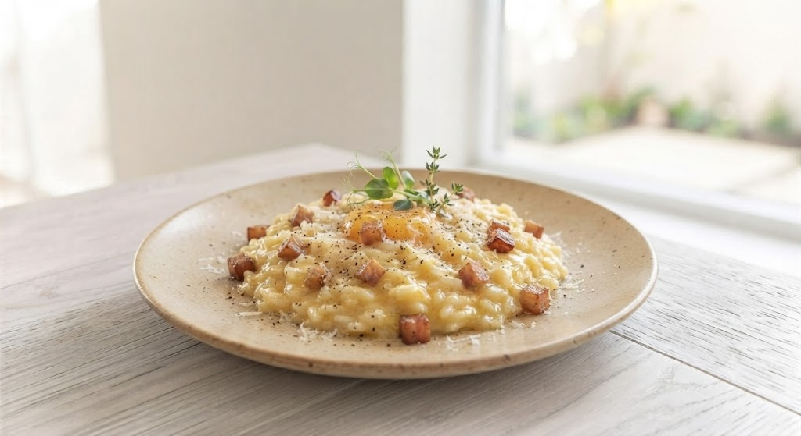
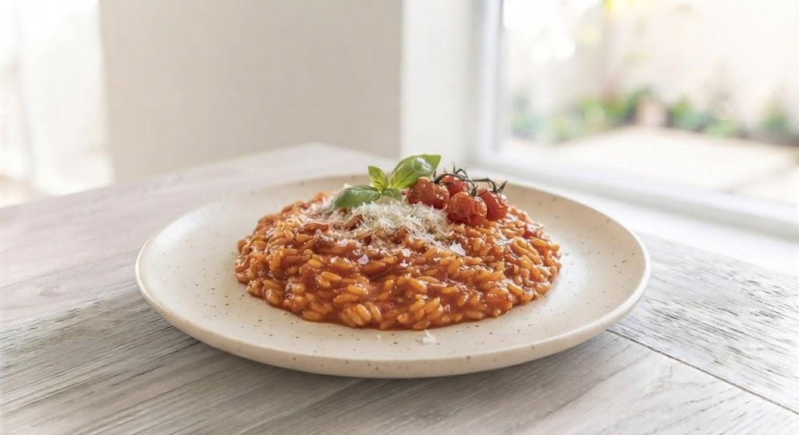
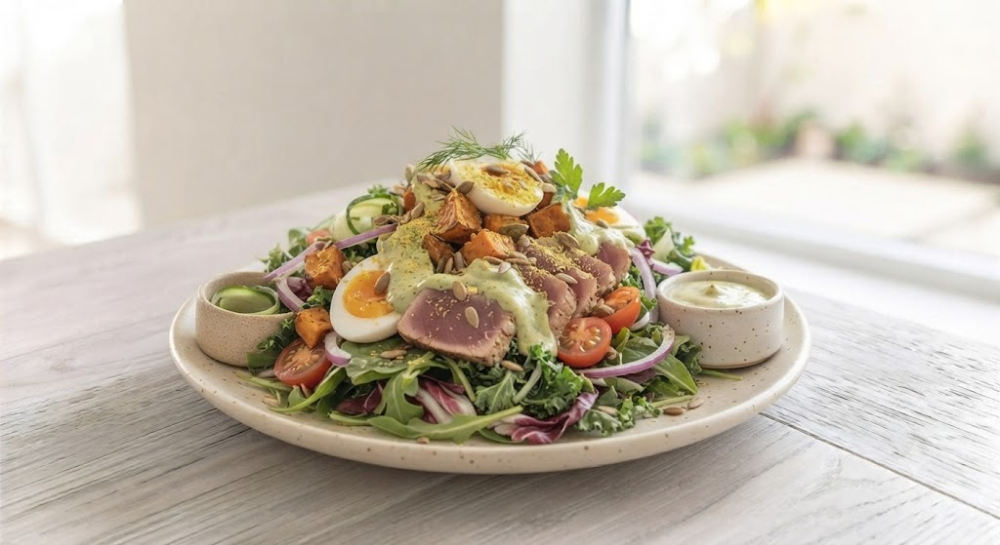
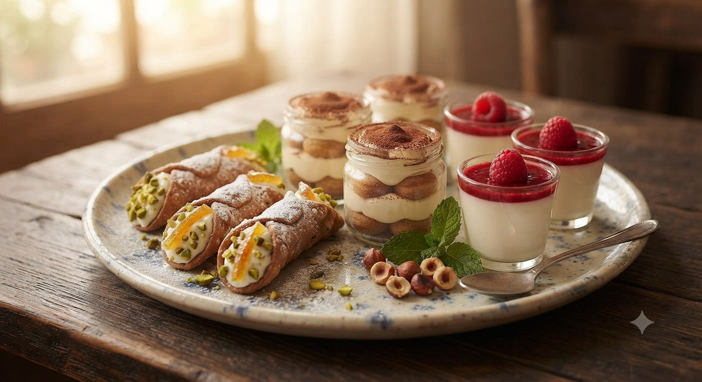

代表:厨本 学
なぜ「リゾット専門店」なのか。
オーストラリアで見たリゾットの熱狂。それを日本のお米、北海道の食材で再現したい。 「本格イタリアン」の壁を取り払い、誰もが大きな口で頬張れる場所を作りたい——その想いで2006年にGAKUは生声を上げました。
「美味しいものを、お腹いっぱい食べて、笑顔になってほしい。」
それが私たちの原点であり、すべてです。
100種類以上のバリエーションから見つける、
あなただけの一皿。北海道米×旬の贅沢食材。

看板メニュー:カルボナーラのリゾット
おまかせサラダ・ドリンク・自家焙ドルチェが付いて大満足のボリューム。
大丈夫!GAKUにお任せください!
リゾットを「定食屋スタイル」で、お腹いっぱい楽しむ提案。

クリームもトマトも和風もカレースタイル…その日の気分に必ずフィットする一皿を。

「定食屋」感覚のボリュームな一皿。おまかせサラダは大盛足の盛りです。

食後はパティシエ自慢のジェラートやドルチェで。カフェ利用も大歓迎!
代表:厨本 学
オーストラリアで見たリゾットの熱狂。それを日本のお米、北海道の食材で再現したい。 「本格イタリアン」の壁を取り払い、誰もが大きな口で頬張れる場所を作りたい——その想いで2006年にGAKUは生声を上げました。
「美味しいものを、お腹いっぱい食べて、笑顔になってほしい。」
それが私たちの原点であり、すべてです。
「店員さんの親切なアドバイスで、初めてでも安心して選べました。リゾットの硬さが選べるのも嬉しいポイント!」
「おまかせサラダのボリュームに驚き!カレークリームリゾットに餅チーズトッピングは最強の組み合わせでした。」
「種類が多すぎて迷いますが、それも楽しみの一つ。中休みがないので、遅めのランチにも使えるのが最高です。」
お客様の「もっとこうだったら嬉しい」にお応えして、現在準備中の新サービスをご紹介!
「クリームもトマトもどっちも食べたい!」「100種類もあるから迷いすぎる…」という声にお応え!
ハーフサイズで好きなリゾットを2種類チョイスできる、夜の食べ比べセットを展開予定です。
「お家でも店舗と同じアルデンテの贅々リゾットを食べたい!」
GAKU秘伝のブイヨンスープと北海道米、厳選具材を冷凍パックでお届け。フライパン1つで5分で本格の味が完成します。
💡 「こんなリゾット・サービスがほしい!」というアイデアを募集中です!
ご来店時のアンケートや公式Instagramのダイレクトメッセージにて、あなたのリクエストをお聞かせください。
公式Instagramでリクエストを送る平岸駅徒歩5分。駐車場も完備してお待ちしております。
Risotteria.GAKU hiragishi
〒062-0932 北海道札幌市豊平区平岸2条5丁目2-14
第5平岸グランドビル 1F
地下鉄南北線「平岸駅」から平岸街道沿いを北へ徒歩5分。
店舗横に5台、店舗裏に3台分ございます。
※斜め駐車となりますのでご注意ください。満車の場合は近隣のコインパーキングをご利用ください。
営業時間
11:00 〜 22:00
(中休みなし)
定休日
火曜日・水曜日